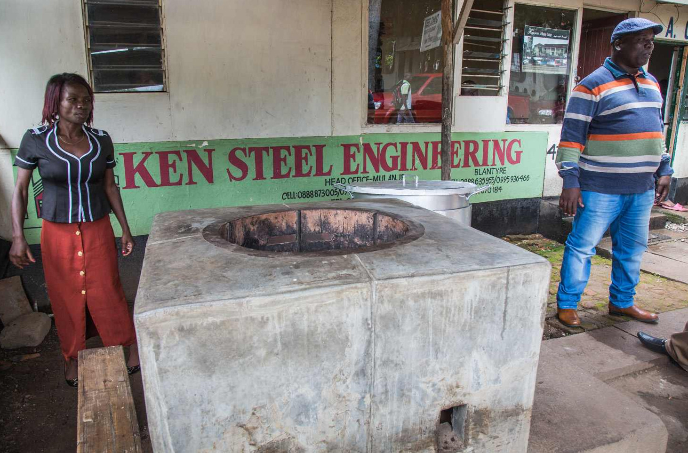

Cookstove millionaire
Producing more efficient cookstoves has proved lucrative business for some, like Ken Chilewe
At the foot of Mulanje Mountain, a mountain massif in the south of Malawi, a statue of Africa’s ‘Big Five’ (lion, African elephant, Cape buffalo, leopard, and rhino) towers in front of the ‘Hapuwani Village Lodge’, a luxurious resort in the south of Malawi. The hotel was built by Ken Chilewe, Mulanje’s very own ‘cookstove millionaire’.
Cookstoves paid for Ken’s luxury village. He is the only entrepreneur in Malawi to have made millions with this household appliance since he started Ken Steel Engineering, a company selling ‘institutional’ cookstoves to international donors like UNICEF, the World Food Programme (WFP) and the international charity Mary’s Meals. Bearing a big smile, the business made him what he calls ‘big bucks’. Ken also sells in bulk to UN agencies in Mozambique, Zambia and Uganda.
Ken sells large, more efficient stoves to large scale customers who use his stoves to prepare food for big groups: children at schools and guests at weddings and funerals.
He remembers well how his business started. Ken got lucky and benefitted from a training scheme organized by the German Society for International Co-operation (Deutsche Gesellschaft für Internationale Zusammenarbeit, GIZ) with 24 other young entrepreneurs. They were taught how to make cleaner cookstoves that use less firewood.
Initially, his friends scoffed at him. ‘Who wants to buy this? Why are you involved in women’s business’? But Ken was the only trainee to be persistent enough to set up a business after the training. And today he is the sole ruler of a what looks like Malawi’s cookstove monopoly. His friends had already stopped laughing when Ken sold his first 400 stoves to the WFP.
He has advice for other aspiring business women and men: ‘There is big money in this. Go to the donors,’ he says.
 Ken Chilewe (right) is the most successful man in Mulanje – his business, Ken Steel Engineering, makes millions of dollars selling cookstoves. In front of his shop he built a rocket stove intended for serious cooks: the stove can hold a large pot for water; enough for the whole family.
His stoves sell for a range of £10-£220 (USD$13-$290) depending on the size of pot the stove can hold. The biggest stove his company produces can hold up to 200 litres. He makes around 15 per cent profit on each stove.
Why didn’t copycats replicate his model? ‘They cannot afford the big upfront instalment,’ Ken says. ‘The market is there, but people can’t afford it.’
And what does the future of the cookstove business look like in Malawi? ‘If NGOs and UN agencies leave, that will be the end.’ He shrugs. ‘That would be so bad for me.’ But until then, the business is his.